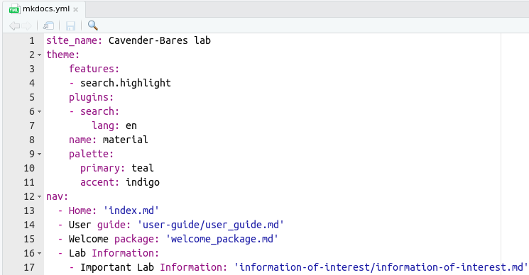

User guide
Objective of Webpage
Create, remove, and update documentation is essential for any organization. This webpage was created for this aim using Mkdocs to satisfy the documentation requirements for the lab.
This webpage does not replace data storage requirements (e.g., group/LAB-cavender, google drive, or local drives). However, it allows users to respond to the following questions:
- Where is the data?
- How the data was collected?
- What protocol I need to follow?
- I am new here, what I need to do?
- Among many others
If you need to update documentation please contact the current data manager, Cathleen.
Webpage Development
To build this webpage, users must install on their computer:
- RStudio and R.
- Rmarkdown and Knitr packages (e.g,
install.packages("rmarkdown")). - pip
- MkDocs (e.g., in terminal
pip install mkdocs)- MkDocs material theme (e.i., in terminal
pip install mkdocs-material) - List of additional installation packages required
- MkDocs material theme (e.i., in terminal
- git and Github account.
Note: You need the latest update of python 3. If your pip installs are resulting in error, try pip3.
Step 1 - Clone webpage repository
Confirm that you have the latest versions of R, Rstudio, python, mkdocs, and pip.
To clone the github repository to your local machine using RStudio:
File > New Project ... > Select Version Control > Select Git
In the clone git repository window, add the following URL https://github.com/Cavender-Bares-Lab/Data-management-lab.git and choose the project path of your preference.
If multiple people are working on the repository or you are working from multiple computers, you always need the most updated repository. To do so, click on the Git panel and then pull. Remember that you will need git credentials.
Help
This first step requires basic git skills, if you need help, refer to this guide.
For webpage theme customization, refer to the following links:
- For step by step guidance, refer to Material webpage
- For help with issues, refer to Material github repository
Step 2 - Mkdocs
This webpage is composed of two elements: the structure and the documentation.
-
The structure refers to the online appearance of the documentation, and it is controlled by
mkdocs.ymlfile. In this file, undernav:you will see the structure of how the documentation and web sections will be displayed; their sections, tabs, and sub-tabs. -
The documentation refers to the
.mdfiles located in the docs folder. These files contain all the information required that will be displayed in the webpage. It is good practice to keep these files in folders under docs with names relatives to tabs and sub-tabs, just to keep the webpage in order.
Now that we know these elements, lets take a look at three functions of MkDocs that we will need. In RStudio you can run these commands using the Terminal (the tab next to Console that we always use).
-
mkdocs serve: this command creates a local address to view the documentation in real time. This local address ishttp://127.0.0.1:8000/and it can be opened on your web browser. -
mkdocs build: this command helps you to build the page. A step that need to be conducted close to the end of a session. -
mkdocs gh-deploy: this command will deploy the update the webpage to github pages.
You can type these commands in the terminal to run them. In some cases (Windows most likely), you need to type extra arguments to run them, e.g. python -m mkdocs serve.
Step 3 - Create a documentation file
An easy way to build your documentation is to create a Rmarkdown (.Rmd) file. For this guide, lets assume that you need to document your_new_protocol in the protocols section of the lab. You can create the .Rmd file following:
File > New File > R Markdown > OK
In this new file you can remove all non-essential information and keep the header document similar like:
title: "Your title for the page"
date: "2022-01-01"
output: md_document
author: "Your name"
Please pay attention to the output: section that needs to be md_document and NOT html_document. An essential step for what is coming.
Once you create the file and their structure, you then can write or copy/paste the information that you want to convey in your_new_protocol file. This file uses the writing syntax of rmarkdown; thus it is recommend to follow basic guidelines for doing an elegant document. A quick introduction to rmarkdown is this cheat sheet.
Lets assume that you finished to write your documentation. You can then save the file in a folder of interest under docs. For instance, if you are writing about a protocol, so you can save your_new_protocol.Rmd file in a path like docs/protocols/your_new_protocol.Rmd.
Once you storage the file in the corresponding folder, you can Knit it. But what is this? Knit, for this context, is a process to transform the rmarkdown extension (.Rmd) to markdown (.md); the extension required for Mkdocs. You can Knit the file pressing the knit button close to save, at the top of your rmarkdown document. If everything goes well, you will see a new file docs/protocols/your_new_protocol.md.
Markdown
It is also possible to directly create and edit in a Markdown file. `File > New File > Markdown. This is ideal since many customization features available through Material theme is not transferred properly from .Rmd to .md.
Mathjax
For math syntax, refer to Mathjax basic tutorial and reference
Step 4 - Edit mkdocs.yml
The mkdocs.yml file is located within the Data-management-lab folder outside of docs and site.
Please familiarize yourself with the details and structure of the file first.

Find nav: section. Within the topic of interest under nav:, you will need to add the .md file created in Step 3. For instance, to add this user guide as documentation for the page, the user_guide.md was added in the User guide: section. Please note that when adding the .md file you need to specify the path where it is located, starting off from docs as root.
Following your_new_protocol example, your documentation should be added below the - Protocols: tab in a new section called - Your New Protocol:.
- Protocols:
- Your New Protocol: 'protocols/your_new_protocol.md'
Save the mkdocs.yml to build the page in the next step.
Step 5 - Build webpage
Click on the "Terminal" tab in Rstudio. To view the webpage in real time, type mkdocs serve. The local address will appear in the terminal http://http://127.0.0.1:8000/. Click on the address to view the webpage on your browser.
To close the mkdocs serve in the terminal (Control + C), and build the html files by typing mkdocs build in the terminal. This last command will create several files.
Step 6 - Publish webpage
To publish the webpage with updates/edits, type mkdocs gh-deploy.
To save the edits to the repository, in the terminal, type git add .. Click on "Commit" in the Git tab and write a brief description in the "Commit message". Click "Commit" and when complete, "Push" to update the repository. "Push" and "pull" are very important features when multiple people are making edits to the repository.
Questions
For more information on mkdocs, refer to this blog and webpage.